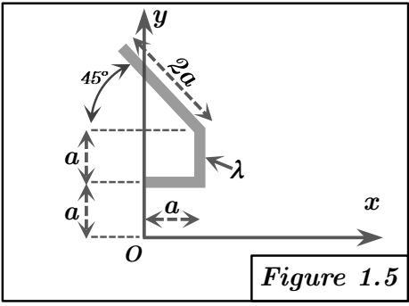

Figure 1.5 : Corps composé de trois tiges dans le plan XY

FIGURE 5 - Corps composé de trois tiges dans le plan XY
Méthode requise : Additivité et Théorème de Huygens, vérification par Calcul direct.
Concepts Clés :
- Additivité : Le tenseur total est la somme des tenseurs des parties. $[I_O]_{\text{total}} = \sum_i [I_O]_i$.
- Théorème de Huygens : Utilisé pour chaque segment pour trouver $[I_O]_i$ à partir de $[I_{G_i}]$. $[I_O]_i = [I_{G_i}] + [I_{O/G_i}]$.
- Plan de symétrie : Le corps est dans le plan $z = 0$, qui est un plan de symétrie matérielle. Donc, $E = I_{xz} = 0$ et $F = I_{yz} = 0$. Le produit d'inertie $D = I_{xy}$ n'est généralement pas nul.
- Corps linéique : Chaque segment est modélisé comme un corps linéique ($dm = \lambda dl$).
- Changement de Repère pour Tenseur d'Inertie (Rotation de Base) :
Soit un repère $R_1(G, X_1Y_1Z_1)$ (par exemple, un repère local où le tenseur d'inertie $[I_G]_{/R_1}$ est connu et simple) et un repère $R_0(G, X_0Y_0Z_0)$ (par exemple, un repère global dans lequel on souhaite exprimer le tenseur). Les deux repères partagent la même origine $G$ pour cette transformation.
- Matrice de Passage des Coordonnées :
La matrice de passage $P_{R_1 \rightarrow R_0}$ est définie comme la matrice qui transforme les coordonnées d'un vecteur de la base $R_1$ vers la base $R_0$. Si $V_{R_1}$ sont les coordonnées d'un vecteur dans $R_1$ et $V_{R_0}$ ses coordonnées dans $R_0$, alors :
$$ V_{R_0} = P_{R_1 \rightarrow R_0} V_{R_1} $$
Les colonnes de $P_{R_1 \rightarrow R_0}$ sont formées par les composantes des vecteurs de base de $R_1$ (par ex., $\vec{i_1}, \vec{j_1}, \vec{k_1}$) exprimées dans la base $R_0$.
- Transformation du Tenseur d'Inertie :
Pour exprimer le tenseur d'inertie $[I_G]_{/R_1}$ (connu dans $R_1$) dans le repère $R_0$, on utilise la formule suivante, conforme à la logique de l'image de référence (en interprétant $P_{R_0 \rightarrow R_1}$ de l'image comme notre $P_{R_1 \rightarrow R_0}$ ici, et $P_{R_1 \rightarrow R_0}$ de l'image comme $(P_{R_1 \rightarrow R_0})^T$ ici):
$$ [I_G]_{/R_0} = (P_{R_1 \rightarrow R_0})^T [I_G]_{/R_1} (P_{R_1 \rightarrow R_0}) $$
où $(P_{R_1 \rightarrow R_0})^T$ est la transposée de $P_{R_1 \rightarrow R_0}$.
- Application Pratique :
Pour le segment CD, $R_1$ sera notre repère local $R_{loc}(G_3, X'Y'Z')$ et $R_0$ sera le repère global $R_{glob}(G_3, XYZ)$. La matrice $P$ que nous construisons est $P_{R_{loc} \rightarrow R_{glob}}$.
Le tenseur d'inertie de la tige CD par rapport à son centre de masse $G_3$, exprimé dans le repère global $R_{glob}$, est donc:
$$ [I_{G3}]_{R_{glob}} = P^T [I_{G3}]_{R_{loc}} P $$
Géométrie et Décomposition :
Le corps est formé de 3 segments de tiges homogènes (densité $\lambda$) dans le plan $z = 0$. Le repère global de référence est $(O,X,Y,Z)$, noté $R_{glob}$.
- Seg 1 (AB) : de $A = \begin{pmatrix} 0 \\ a \\ 0 \end{pmatrix}$ à $B = \begin{pmatrix} a \\ a \\ 0 \end{pmatrix}$. $L_1 = a, M_1 = \lambda a, G_1 = (a/2, a, 0)$.
- Seg 2 (BC) : de $B = \begin{pmatrix} a \\ a \\ 0 \end{pmatrix}$ à $C = \begin{pmatrix} a \\ 2a \\ 0 \end{pmatrix}$. $L_2 = a, M_2 = \lambda a, G_2 = (a, 3a/2, 0)$.
- Seg 3 (CD) : de $C = \begin{pmatrix} a \\ 2a \\ 0 \end{pmatrix}$ à $D = \begin{pmatrix} a(1-\sqrt{2}) \\ a(2+\sqrt{2}) \\ 0 \end{pmatrix}$. $L_3 = 2a, M_3 = 2\lambda a, G_3 = (a(1 - \sqrt{2}/2), a(2 + \sqrt{2}/2), 0)$.
Vecteur $\vec{DC} = (a\sqrt{2}, -a\sqrt{2}, 0)$.
Méthode 1 : Additivité et Théorème de Huygens
On calcule $[I_O]_i = [I_{G_i}]_{R_{glob}} + [I_{O/G_i}]_{R_{glob}}$ pour chaque segment.
Segment 1 (AB) : Parallèle à OX
- $M_1 = \lambda a, L_1 = a, G_1 = (a/2, a, 0)$.
- Tenseur $[I_{G1}]$ (cf. Fig 1.1) :
$$ [I_{G1}] = \begin{pmatrix} 0 & 0 & 0 \\ 0 & M_1 a^2 / 12 & 0 \\ 0 & 0 & M_1 a^2 / 12 \end{pmatrix} = \begin{pmatrix} 0 & 0 & 0 \\ 0 & \lambda a^3 / 12 & 0 \\ 0 & 0 & \lambda a^3 / 12 \end{pmatrix} $$
- Transport $[I_{O/G1}]$ : $x_G=a/2, y_G=a, z_G=0$.
$$ [I_{O/G1}] = M_1 \begin{pmatrix} y_G^2+z_G^2 & -x_G y_G & -x_G z_G \\ -x_G y_G & x_G^2+z_G^2 & -y_G z_G \\ -x_G z_G & -y_G z_G & x_G^2+y_G^2 \end{pmatrix} = \lambda a \begin{pmatrix} a^2+0 & -(a/2)a & 0 \\ -(a/2)a & (a/2)^2+0 & 0 \\ 0 & 0 & (a/2)^2+a^2 \end{pmatrix} = \lambda a \begin{pmatrix} a^2 & -a^2/2 & 0 \\ -a^2/2 & a^2/4 & 0 \\ 0 & 0 & 5a^2/4 \end{pmatrix} = \begin{pmatrix} \lambda a^3 & -\lambda a^3/2 & 0 \\ -\lambda a^3/2 & \lambda a^3/4 & 0 \\ 0 & 0 & 5\lambda a^3/4 \end{pmatrix} $$
- Tenseur $[I_O]_1$:
$$ [I_O]_1 = [I_{G1}] + [I_{O/G1}] = \begin{pmatrix} \lambda a^3 & -\lambda a^3/2 & 0 \\ -\lambda a^3/2 & \lambda a^3/12 + \lambda a^3/4 & 0 \\ 0 & 0 & \lambda a^3/12 + 5\lambda a^3/4 \end{pmatrix} = \begin{pmatrix} \lambda a^3 & -\lambda a^3/2 & 0 \\ -\lambda a^3/2 & \lambda a^3/3 & 0 \\ 0 & 0 & 4\lambda a^3/3 \end{pmatrix} $$
Segment 2 (BC) : Parallèle à OY
- $M_2 = \lambda a, L_2 = a, G_2 = (a, 3a/2, 0)$.
- Tenseur $[I_{G2}]$ (tige // OY) :
$$ [I_{G2}] = \begin{pmatrix} M_2 a^2 / 12 & 0 & 0 \\ 0 & 0 & 0 \\ 0 & 0 & M_2 a^2 / 12 \end{pmatrix} = \begin{pmatrix} \lambda a^3 / 12 & 0 & 0 \\ 0 & 0 & 0 \\ 0 & 0 & \lambda a^3 / 12 \end{pmatrix} $$
- Transport $[I_{O/G2}]$ : $x_G=a, y_G=3a/2, z_G=0$.
$$ [I_{O/G2}] = M_2 \begin{pmatrix} y_G^2+z_G^2 & -x_G y_G & -x_G z_G \\ -x_G y_G & x_G^2+z_G^2 & -y_G z_G \\ -x_G z_G & -y_G z_G & x_G^2+y_G^2 \end{pmatrix} = \lambda a \begin{pmatrix} (3a/2)^2+0 & -a(3a/2) & 0 \\ -a(3a/2) & a^2+0 & 0 \\ 0 & 0 & a^2+(3a/2)^2 \end{pmatrix} = \lambda a \begin{pmatrix} 9a^2/4 & -3a^2/2 & 0 \\ -3a^2/2 & a^2 & 0 \\ 0 & 0 & 13a^2/4 \end{pmatrix} = \begin{pmatrix} 9\lambda a^3/4 & -3\lambda a^3/2 & 0 \\ -3\lambda a^3/2 & \lambda a^3 & 0 \\ 0 & 0 & 13\lambda a^3/4 \end{pmatrix} $$
- Tenseur $[I_O]_2$:
$$ [I_O]_2 = [I_{G2}] + [I_{O/G2}] = \begin{pmatrix} \lambda a^3/12 + 9\lambda a^3/4 & -3\lambda a^3/2 & 0 \\ -3\lambda a^3/2 & \lambda a^3 & 0 \\ 0 & 0 & \lambda a^3/12 + 13\lambda a^3/4 \end{pmatrix} = \begin{pmatrix} 7\lambda a^3/3 & -3\lambda a^3/2 & 0 \\ -3\lambda a^3/2 & \lambda a^3 & 0 \\ 0 & 0 & 10\lambda a^3/3 \end{pmatrix} $$
Segment 3 (CD) : Application de la transformation $P^T I_{loc} P$
Le repère local $R_{loc}(G_3, X'Y'Z')$ est choisi tel que $G_3X'$ est aligné avec $\vec{DC}$. L'angle entre $OX_{glob}$ et $G_3X'_{loc}$ est $\theta = -45°$.
Le repère global "équivalent" centré en $G_3$ est $R_{glob}(G_3,XYZ)$.
Étape 1 : Tenseur d'inertie dans $R_{loc}(G_3, X'Y'Z')$
$$ [I_{G3}]_{R_{loc}} = \begin{pmatrix} 0 & 0 & 0 \\ 0 & M_3 L_3^2 / 12 & 0 \\ 0 & 0 & M_3 L_3^2 / 12 \end{pmatrix} = \begin{pmatrix} 0 & 0 & 0 \\ 0 & 2\lambda a^3 / 3 & 0 \\ 0 & 0 & 2\lambda a^3 / 3 \end{pmatrix} $$
Soit $K = \frac{2\lambda a^3}{3}$.
Étape 2 : Matrice de Passage $P \equiv P_{R_{loc} \rightarrow R_{glob}}$
Les colonnes de $P$ sont les vecteurs de base de $R_{loc}$ ($\vec{i}', \vec{j}', \vec{k}'$) exprimés dans $R_{glob}$.
$\vec{i}'$ (axe $G_3X'$) fait un angle $\theta = -45°$ avec $OX_{glob}$.
$\vec{j}'$ (axe $G_3Y'$) fait un angle $\theta+90° = 45°$ avec $OX_{glob}$.
$$ P = \begin{pmatrix} \cos(-45°) & \cos(45°) & 0 \\ \sin(-45°) & \sin(45°) & 0 \\ 0 & 0 & 1 \end{pmatrix} = \begin{pmatrix} 1/\sqrt{2} & 1/\sqrt{2} & 0 \\ -1/\sqrt{2} & 1/\sqrt{2} & 0 \\ 0 & 0 & 1 \end{pmatrix} $$
Étape 3 : Rotation du Tenseur vers le Repère Global $R_{glob}(G_3,XYZ)$
$[I_{G3}]_{R_{glob}} = P^T [I_{G3}]_{R_{loc}} P$.
$P^T = \begin{pmatrix} 1/\sqrt{2} & -1/\sqrt{2} & 0 \\ 1/\sqrt{2} & 1/\sqrt{2} & 0 \\ 0 & 0 & 1 \end{pmatrix}$.
$$ P^T [I_{G3}]_{R_{loc}} = \begin{pmatrix} 1/\sqrt{2} & -1/\sqrt{2} & 0 \\ 1/\sqrt{2} & 1/\sqrt{2} & 0 \\ 0 & 0 & 1 \end{pmatrix} \begin{pmatrix} 0 & 0 & 0 \\ 0 & K & 0 \\ 0 & 0 & K \end{pmatrix} = \begin{pmatrix} 0 & -K/\sqrt{2} & 0 \\ 0 & K/\sqrt{2} & 0 \\ 0 & 0 & K \end{pmatrix} $$
$$ [I_{G3}]_{R_{glob}} = (P^T [I_{G3}]_{R_{loc}}) P = \begin{pmatrix} 0 & -K/\sqrt{2} & 0 \\ 0 & K/\sqrt{2} & 0 \\ 0 & 0 & K \end{pmatrix} \begin{pmatrix} 1/\sqrt{2} & 1/\sqrt{2} & 0 \\ -1/\sqrt{2} & 1/\sqrt{2} & 0 \\ 0 & 0 & 1 \end{pmatrix} $$
$$ = \begin{pmatrix} K/2 & -K/2 & 0 \\ -K/2 & K/2 & 0 \\ 0 & 0 & K \end{pmatrix} = \lambda a^3 \begin{pmatrix} 1/3 & -1/3 & 0 \\ -1/3 & 1/3 & 0 \\ 0 & 0 & 2/3 \end{pmatrix} $$
Étape 4 : Terme de Huygens $[I_{O/G3}]_{R_{glob}}$
(Ce terme est inchangé)
$$ [I_{O/G3}]_{R_{glob}} = \lambda a^3 \begin{pmatrix} 9 + 4\sqrt{2} & -3 + \sqrt{2} & 0 \\ -3 + \sqrt{2} & 3 - 2\sqrt{2} & 0 \\ 0 & 0 & 12 + 2\sqrt{2} \end{pmatrix} $$
Étape 5 : Tenseur d'Inertie Final pour CD en O, $[I_O]_3$
$$ [I_O]_3 = [I_{G3}]_{R_{glob}} + [I_{O/G3}]_{R_{glob}} $$
$$ = \lambda a^3 \begin{pmatrix} 1/3 & -1/3 & 0 \\ -1/3 & 1/3 & 0 \\ 0 & 0 & 2/3 \end{pmatrix} + \lambda a^3 \begin{pmatrix} 9 + 4\sqrt{2} & -3 + \sqrt{2} & 0 \\ -3 + \sqrt{2} & 3 - 2\sqrt{2} & 0 \\ 0 & 0 & 12 + 2\sqrt{2} \end{pmatrix} $$
$$ = \lambda a^3 \begin{pmatrix} \frac{28}{3} + 4\sqrt{2} & -\frac{10}{3} + \sqrt{2} & 0 \\ -\frac{10}{3} + \sqrt{2} & \frac{10}{3} - 2\sqrt{2} & 0 \\ 0 & 0 & \frac{38}{3} + 2\sqrt{2} \end{pmatrix} $$
Tenseur Total :
$[I_O]_{R_{glob}} = [I_O]_1 + [I_O]_2 + [I_O]_3 $.
Les termes $A=I_{xx}$ et $B=I_{yy}$ de $[I_O]_3$ sont inchangés par rapport aux calculs précédents utilisant $P I P^T$. Seul $I_{xy}$ de $[I_O]_3$ change avec $P^T I P$.
- $A = \lambda a^3 (\frac{38}{3} + 4\sqrt{2})$
- $B = \lambda a^3 (\frac{14}{3} - 2\sqrt{2})$
- Composante $I_{xy}$ de $[I_O]_{R_{glob}}$:
$I_{xy,1} = -\lambda a^3/2$
$I_{xy,2} = -3\lambda a^3/2$
$I_{xy,3} = \lambda a^3(-\frac{10}{3} + \sqrt{2})$
$I_{xy,total} = \lambda a^3 (-\frac{1}{2} - \frac{3}{2} - \frac{10}{3} + \sqrt{2}) = \lambda a^3 (-2 - \frac{10}{3} + \sqrt{2}) = \lambda a^3 (\frac{-6-10}{3} + \sqrt{2}) = \lambda a^3 (-\frac{16}{3} + \sqrt{2})$.
Le produit d'inertie $D = -I_{xy,total} = \lambda a^3 (\frac{16}{3} - \sqrt{2})$.
- $C = A+B = \lambda a^3 (\frac{52}{3} + 2\sqrt{2})$
Résultat (Huygens, avec la convention de l'image interprétée comme $P^T I P$ où $P=P_{R_{loc} \rightarrow R_{glob}}$):
$$ [I_O]_{\text{Huygens}} = \lambda a^3 \begin{pmatrix} \frac{38}{3} + 4\sqrt{2} & -(\frac{16}{3} - \sqrt{2}) & 0 \\ -(\frac{16}{3} - \sqrt{2}) & \frac{14}{3} - 2\sqrt{2} & 0 \\ 0 & 0 & \frac{52}{3} + 2\sqrt{2} \end{pmatrix} $$
Méthode 2 : Calcul direct par intégration
(Cette section reste inchangée, les intégrales sont calculées directement dans $R_{glob}(O,XYZ)$.)
Segment 1 (AB):
$ A_1 = \lambda a^3, \quad B_1 = \lambda a^3/3, \quad D_1 = \lambda a^3/2 $
Segment 2 (BC):
$ A_2 = 7\lambda a^3/3, \quad B_2 = \lambda a^3, \quad D_2 = 3\lambda a^3/2 $
Segment 3 (CD):
$ A_3 = \lambda a^3 \left( \frac{28}{3} + 4\sqrt{2} \right) $
$ B_3 = \lambda a^3 \left( \frac{10}{3} - 2\sqrt{2} \right) $
$ D_3 = \int_0^{2a} x(s)y(s) \lambda ds = \lambda a^3 \left( \frac{8}{3} - \sqrt{2} \right) $
Somme des intégrales :
$$ A_{total} = A_1 + A_2 + A_3 = \lambda a^3(\frac{38}{3} + 4\sqrt{2}) $$
$$ B_{total} = B_1 + B_2 + B_3 = \lambda a^3(\frac{14}{3} - 2\sqrt{2}) $$
$$ D_{total} = D_1 + D_2 + D_3 = \lambda a^3(\frac{1}{2} + \frac{3}{2} + \frac{8}{3} - \sqrt{2}) = \lambda a^3(2 + \frac{8}{3} - \sqrt{2}) = \lambda a^3(\frac{14}{3} - \sqrt{2}) $$
$$ I_{zz, total} = A_{total} + B_{total} = \lambda a^3 (\frac{52}{3} + 2\sqrt{2}) $$
Résultat (Calcul Direct) :
$$ [I_O]_{\text{Direct}} = \lambda a^3 \begin{pmatrix} \frac{38}{3} + 4\sqrt{2} & -(\frac{14}{3} - \sqrt{2}) & 0 \\ -(\frac{14}{3} - \sqrt{2}) & \frac{14}{3} - 2\sqrt{2} & 0 \\ 0 & 0 & \frac{52}{3} + 2\sqrt{2} \end{pmatrix} $$
Vérification :
Les termes diagonaux $A$, $B$, et $C=I_{zz}$ des deux méthodes coïncident.
Cependant, le produit d'inertie $D = -I_{xy}$ obtenu par la méthode de Huygens en utilisant la convention de transformation de tenseur $P^T I_{loc} P$ (où $P=P_{R_{loc} \rightarrow R_{glob}}$ a pour colonnes les vecteurs de base locaux exprimés dans la base globale) est $D_{\text{Huygens}} = \lambda a^3 (\frac{16}{3} - \sqrt{2})$.
Le produit d'inertie $D$ obtenu par calcul direct est $D_{\text{Direct}} = \lambda a^3 (\frac{14}{3} - \sqrt{2})$.
Ces deux valeurs pour $D$ diffèrent. Cette différence provient du choix de la formule de transformation du tenseur. La formule $I_{glob} = P I_{loc} P^T$ (où $P$ est défini comme $P_{R_{loc} \rightarrow R_{glob}}$ ci-dessus) est celle qui donne une concordance avec le calcul direct pour $D$. L'énoncé demandait d'adopter la logique de l'image fournie, qui (avec notre définition de P) mène à $I_{glob} = P^T I_{loc} P$.